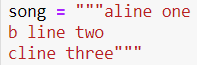

שאלה לסגל הקורס: האם אפשר להניח שכל שורה בשיר נגמרת בn\ ?
תודה
לייק 1
כן, זו ההגדרה של שורה
אפשר להניח שהשיר ייתקבל בפורמט הבא?

בהחלט  (כל מחרוזת)
(כל מחרוזת)
היי ים, ממש סליחה על החפירה, האם מותר להשתמש במתודה splitlines?
טכנית לא למדנו, ספציפית במקרה הזה אם תשתמש נחליק
אבל זה כמו לשים
split(’\n’) מה זה “משנה”, אגב, אסור להשתמש מידע באינטרנט במהלך הקורס?
לא אמורים להשתמש בפקודות שלא למדנו, אלא אם כן צויין במפורש אחרת. בנו את התרגילים כך שהם יתרגלו דברים ספציפיים שלמדנו 
האם אפשר להשתמש בזה באופן כללי בשבוע ארבע או רק בתרגיל של האקרוסטיכון? זה פשוט מאד מפשט וחוסך לולאה/שורה בלולאה. תודה
אפשר להשתמש בזה מעתה והלאה, לא נכעס
לייק 1